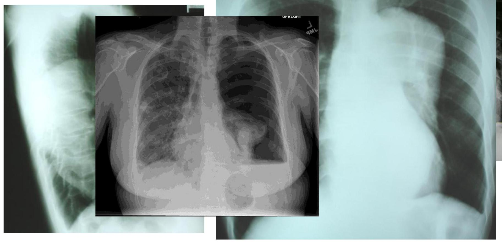
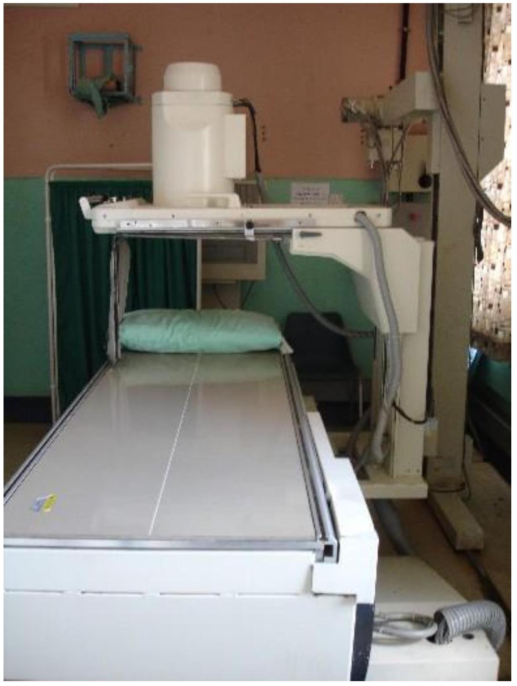
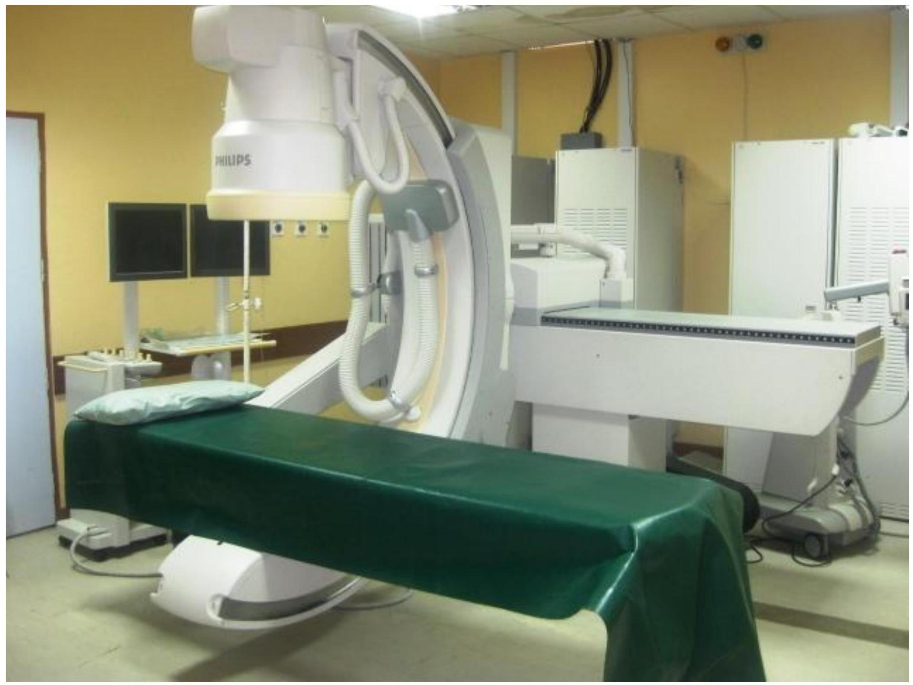
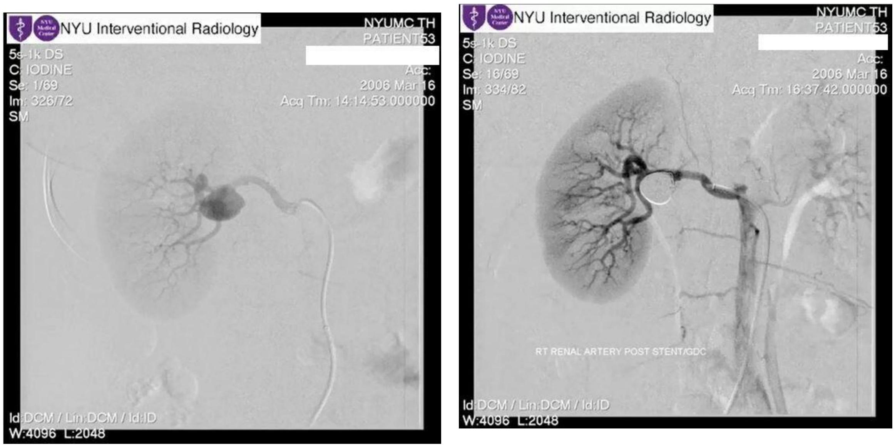
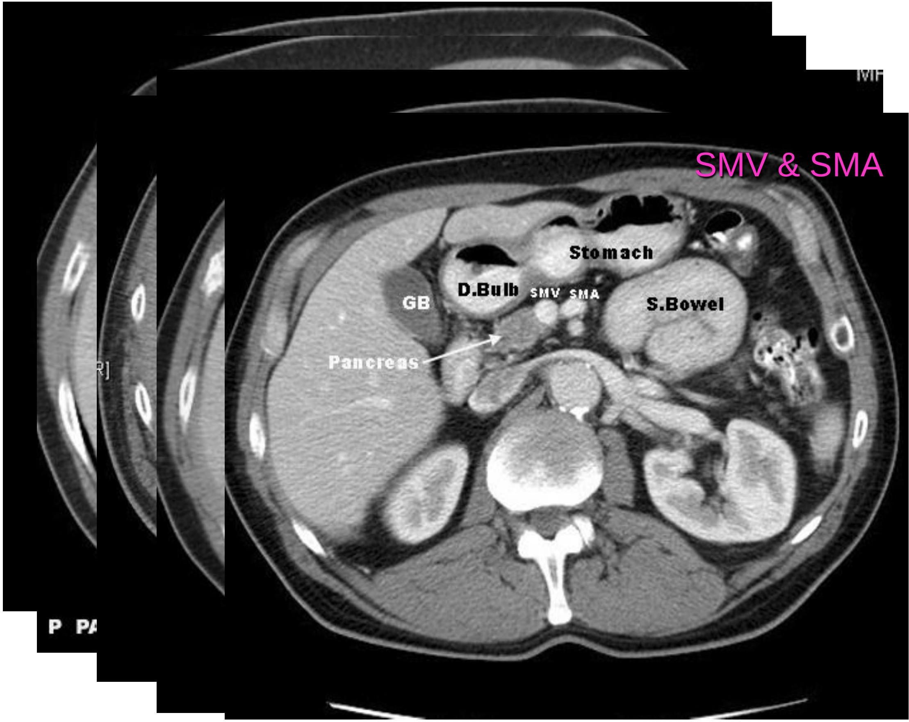
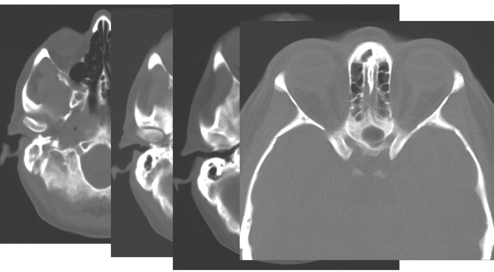

THE X-RAY
APPLICATIONS IN CLINICAL PRACTICE
Dr N M kimani Dept. Diag imaging
X - RAY Introduction
- Discovered on Nov. 8th 1895 by Wilhem Conrad Roentgen.
- Dec. 22nd 1895. 1st radiographic image produced. This was a 15 minute exposure of Berthas hand.
- Birth of radiology as a medical specialty
- Feb 2nd 1990 -phenomenon observed by Prof. A. W. Good speed.
APPLICATIONS
- X-ray imaging
-
Therapeutic
- malignancy
- hypertrophic tissue e.g keloids.
X-Ray Imaging Methods
- Plain Radiography/ conventional tomography
- Fluoroscopy (Trans illumination)
- Computed Tomography
X-RAY MACHINE

Spine

Plain Radiography Examples
Pelvis-prostatic calculi
- Chest-normal,aortic aneurysm, lung collapse
- Lung abscess
- Rickets
- Lat. Ankle
- Skull fracture
- cassette
Advantages
- Full size radiography - anatomy shown in full size.
- Provides static images with the highest spatial resolution
- Availability
- Inexpensive
Disadvantages
- Poor resolution.
- Overlap of structures.
-
Non differential of structures.
- -soft tissues anonymous
- -fat
- -air
- -bone /calcification
- Non visualization of hollow structures.
- High radiation dose: film is a poor receptor of radiation and hence high dose is required.
- Cannot demonstrate physiological activity
Advances
- Digital radiography
- CRS, digital cassetes
CONVENTIONAL TOMOGRAPHY
- A thin plane through the patient imaged
- Movement of the x-ray source
- Movement of film
- Structures in planes other than the one being imaged are subjected to blurring due to gross movement in sharpness.
Fluoroscopy
Primary image created on a fluorescent screen.
Screen is part of an x-ray image intensifier that enhances the brightness(luminance by a factor of about 5000).
Image from intensifier recorded via lenses by a T.V camera and shown on a monitor.
Image may be reflected by mirrors to a small still camera or cine camera (fluorography)
 - C-arm KNH
- ICA ANGIO
- PULMONARY ANGIO...
- HYSTEROSALPHINGORAM(HSG)
- Interventional suite
Renal Artery Aneurysm -Endovascular Repair of the Aneurysm
COMPUTER TOMOGRAPHY (CT)
- Invention by Sir Godfrey Hounsfield in 1972.
- Greatest step forward in radiology since the discovery of x-rays.
- Initial scanners designed for head studies only but soon whole body scanners became available.
- Used for imaging any part of the body today.
- depends on the fact that different tissues provide different degrees of x-ray attenuation.
- Thin slices of tissue exposed.
KNH 128 SLICE CT SCANNER
Computerized Tomography Diagram

Advantages
- high contrast resolution.
- no disturbing superimposition.
- axial scans done
- detectors about 100 times more sensitive to x-rays than radiographic film = less radiation.
- better bone detail
- soft tissues and fluid can be differentiated.
- Reconstruction with appropriate software
BASE OF SKULL
Disadvantages
- Radiation
- Cost
- availability
Radiotherapy
The ' x -ray' in high doses is used for treatment of various cancers.
Examples - Breast - Cancer of the cervix - Sarcomas - prostate cancer etc.
image (radiotherapy equipment).